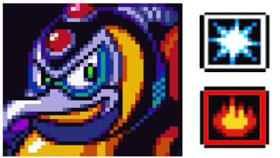
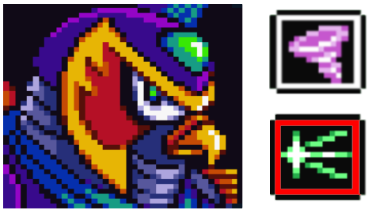
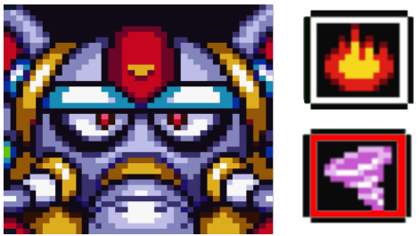
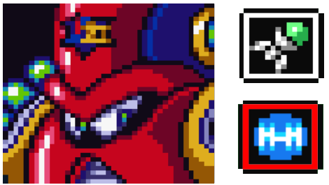
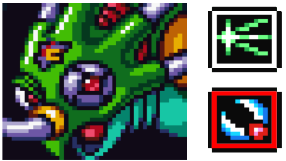

Charge the buster and get close enough to see the enemy. Like this you don’t spawn the rest of the enemies, and you won’t get hit by the logs.
You can also spam the attack to destroy the logs.
Keep scrolling the stage slowly while charging the buster.
Basic shot is enough to kill the bats.
You will find the dash upgrade
Always charge the buster before jumping to other platforms. This allows you to kill possible enemies coming in one shot. Wait until the next charge to keep going, scrolling the screen little by little.
Keep scrolling the screen little by little after charging the buster.
You can jump out of the robot pressing up jump, to skip a part of the stage.
Once these enemies shoot the first big snow ball, they won’t shoot another. They will get ready to throw a smaller one if you get close. Take the chance after the big snowball and dash jump. If you stand under them,
they can't reach you.
You can also kill the snow ball and stand under them.
When you reach the edge, wait for the big snowball and dash jump to get under it.
The last one can shoot two big snowballs. Charge the buster, and after the first one, jump and release to kill the second snowball.
Gives: Shotgun ice Weakness: Fire Wave
Chill penguin will make icicles with its frozen breath and he will dash or make a snow storm that will push the icicles towards you. It pushes you too, so make sure you are on a wall when he storms.
You can sneak a hit under the icicles when it is forming them. You can destroy the icicles if you shoot at them to be able to land another hit or make the battle easier.
It will slide across the screen, it will do this more often if the icicles are onscreen. It's invulnerable while dashing.
If it shoots the icicles really close to you, climb the closest wall and dash jump to the other side and land a hit.
Make sure you are not standing close when you release the attack or it will get pushed towards you. Its body does more damage than the other attacks. You can only tank 3 hits from the boss.
It will throw ice through its mouth. You can dodge this by standing on the wall. When it is done it will laugh, you have some time then to land a hit
Remember that if you dash and shoot you will deal double damage.
DEFENSE UPGRADE AND CHAMELEON ATTEMPT
We are going to pick up the armor upgrade at the chameleon stage right away since it gives you 50% of the damage reduction. You don’t need to beat the stage to keep it
To find the armor upgrade you need the dash, and you have to climb up that green wall. You will encounter a mini boss.
The miniboss is vulnerable to boomerang cutter (but we don’t have it yet) It has two movesets. It jumps over you. Dash under and shoot.
And it tries to grab you with his arm. Just climb the wall. After a while when it is low hp, it will have smoke on its head, and it can grab the wall, moving towards it. Just dash jump over.
After defeating the miniboss you will get the armor upgrade, which reduces damage in 50%.
I highly recommend trying to beat the stage, defeating the chameleon, because the chameleon sub weapon charged with the arm upgrade gives you invincibility for a short amount of time. This is incredibly strong, giving you a lot of advantage through the game. If you can’t defeat the chameleon, don’t worry and come back to beat the stage at the end of the route.I will give you tips to beat this stage right now with our current weapons
You can farm HP in these two spots. After the rock cave with the birds, and at the end of the stage before the boss door, spawning the green enemy over and over leaving it offscreen.
It jumps to the ceiling hanging from its tongue and dropping spikes. Stand still will give you more chances of not getting hit than moving around.
It will throw three projectiles three times if it is invisible and sits down at the corner. Stand on the other side touching the wall. You can hit it with ice.
If you are agile, you can even land a shot, climbing the wall before it appears in the corner.
Always go to the middle of the screen after it makes a move.
The plan is to move to the middle to bait its attack towards you, and dash away from it and shoot so you don’t get hit and you land a shot. And repeat this over and over.
Once it approaches you with its tongue, it will always fall down. If you are too close to the boss, it will reach you with its tongue, so stay far away and wait for its next move.
I recommend beating it early in the game to get its sub weapon. You could make an attempt in between every stage Once you have more power ups. And if you really can’t beat it, wait until the end and go to stage 8 sting chameleon in the route guide.
2 - STORM EAGLE
Wait on the platform and once you reach close to that green vertical line, single jump, you will slide in the upper platform and press jump again.
Once on the platform, stand around the middle and shoot the enemies.
There is a heart upgrade to the left. Get ready on the platform by standing a little bit to the right to be able to make a good dash.
There is a sub tank up in the building. Kill the cannon and break the glass to get inside
The energy tank will be right behind the robot enemy.
Cannons will appear randomly on the platforms. If you stand on the left edge of the platform, you won’t trigger the fire, but if you do, it will still not hit you.You don’t need to dash to get to the next platform, a single jump is enough to make it to every moving platform.
If you destroy the cannon but this goes offscreen, it will respawn so be careful.
There is a 1UP behind the fire wall. Using the ice weapon makes it faster for it to open. You can also break it with normal shots.
After that you will find a very long column. Here we will find the helmet upgrade. Climb to the top and slide a little bit on the right side. Then make a dash jump to reach the platform where the fire wall is. It breaks if you shoot with any weapon. Ice makes it faster to open the path
There’s another 1UP up on that platform. To get there you just have to move forward and jump up the platform, you will slide and press jump again.
After picking the 1UP, take the bottom path. You can just slide under the enemies to ignore them, but you have to kill the white enemy robots.
There is a secret entrance on the right, if you slide down the turbine, you will find HP and weapon energy. Then dash jump to the platform to enter the boss.
Storm eagle
Gives: Storm tornado Weakness: Chameleon sting
Storm eagle will throw its storm tornado at you and create a lot of wind that will push you back from it. Dash and shoot right afterwards for dealing double damage to the boss, as we talked about how to deal double damage with the buster.
Its weakness is the c sting. If you killed the chameleon, use it
When it is high up but still on the screen, it will throw an egg. Back off a bit while charging the buster and shoot, like this you will kill all of them at once.
Once it flies to the sky, it will be ready to dive. You can hear the direction that it’s going to come at you, so stand where the green platform is and dash to the opposite side from the sound. Then come back to the green platform so like this it will always come back to the same spot so you don’t get cornered. You can still it when it is diving towards you.
3- FLAME MAMMOTH
Because we defeated chill penguin, the stage is frozen now, which makes it much easier since you can walk on the frozen lava. This is necessary to pick the heart.
If you didn’t beat storm eagle, the stage would be covered in lava, and you can’t pick the heart upgrade.
How to get the arm upgrade:
You want to dash when megaman reaches the last dark spot of the platform and jump at the very edge. Once you are close to the blocks, mash the jump button without stopping until you make it up.
If you are stuck on the wall but can’t break it, let megaman slide down a little, but there’s a lot of risk of falling down doing this. If you break one block but you fall down, you can’t get back up anymore. You will have to restart the stage. Come back after beating the boss to give it another try, since it would be much faster because you can exit the stage in the
pause menu after beating the boss if you fail the jump.
Since the lava is frozen, keep dashing on the ice under the platform until the very end and you will find heart upgrade.
Go to the right and climb up on the platform and use the ice to kill the enemies.
Climb the wall and keep climbing up towards the left, using the ice.
Once you reach the top and you find the two yellow enemies, you will find a 1UP. If you make a dash jump on that edge of the platform to the left, . You will find a sub tank behind the rock wall. Slide on it and press the jump button to break the wall.
Slide on the rock wall and press jump to break it.
If you already picked the arm upgrade, you can charge sub weapons now. If you managed to kill the chameleon, you can charge the c. sting and climb up, ignoring all the enemies.
Take the bottom route to make it easier against the shield enemies. If you get close, they will throw the spike ball at you towards your position. Bait it in front of you and. jump over the ball, the metal rope won’t hurt you. You can either do a charged attack or use the sub weapon s. storm
Take top route because there is an enemy at the end that is camping on the ladder.
If you beat the chameleon you can also dash past all the enemies with the charged c. sting.
Flame mammoth
Gives: Fire wave Weakness: Storm tornado
mammoth will jump and when it lands, it will stun you if you are on the ground. Jump to avoid getting stunned.
If it fires, wait far away from it.
If it gets too close to you, climb
the wall and jump to the other side. It can also throw oil that slows you down if you step on it. It can also set the oil on fire, but that’s very rare.
if you shoot the storm very close, it will hit twice. You can tank the damage and kill it fast.
BACKTRACK: Penguin heart
Go back to the penguin stage to pick up the heart. It’s located on the platform above the robot. Jump and press up jump to exit the robot. Use the fire in that platform to break it, it’s inside it.
4 - SPARK MANDRILL
Since we killed storm eagle, its ship fell on the stage and cut
the electricity. If you don’t defeat storm eagle, the level will have sparks, you will be able to see in the dark paths, and the miniboss will shoot electricity.
Climb to the top and keep going up. Fire is very good against the robots.
Wait until the lights are on. You can shoot storm and you can jump following it to secure the jump and not get hit by an enemy while jumping.
You could use the chameleon charged attack to skip this entirely.
The miniboss doesn’t shoot electricity since we beat storm eagle. Its weakness is the storm. A few storm charges and a normal storm will be enough to kill it.
In close tunnels with a lot of enemies, it’s very effective to use the fire.
You could also use the c sting charged to skip it.
After the pink turtle tank enemy, there’s a heart up on the wall.
You can pick this heart with the boomerang but you can also pick it if you jump in the wall and dash jump up. I will put it in slow motion:
Jump on the wall and when megaman reaches that middle
platform do a dash jump and then move to the right when you see you are high enough to reach the platform. It might take a few attempts.
otherwise come back with the boomerang later. You have to shoot towards the wall while jumping to pick it up.
Storm is really strong against the turtle tanks.
Spark mandrill
Gives: Electric spark Weakness: Shotgun ice
Once you get into the boss room, shoot ice. The boss will freeze. You can keep stunning it with the ice if you shoot again when it lifts its arms and it is about to put its arms down.
5 - ARMORED ARMADILLO
The beginning of the stage is a really good spot to refill the sub tanks and weapon energy. Once you beat the armadillo stage, you can use the armadillo charged weapon that grants you with a shield, to speed up the process.
If you keep going down you will find that strange bat. This bat is special and it has a really high chance of dropping 1UP, so you can go back and forth to keep spawning it and farm lifes. Again this process can be sped up if you have the armadillo sub weapon.
Stand on the cart, you might get hit by enemies, just ignore them all and make sure you don’t fall. Later you want to dash jump whenever you cross that bird enemy that’s alone in the platform. You might get hit by another bird or the bats on the roof, but just ignore them and use the iframes to make it past that bird enemy.
Once you reach this spot, just slide down and immediately climb up. There’s a sub tank behind the drilling tank.
Wait a little bit until the tank leaves and then ignore all the enemies around you, just keep dashing and jumping over them.
Once you reach this spot, fall to the platform where the first yellow enemy is and jump over it. Do the same in the next one
Use fire to kill the wheels and jump over the yellow enemies.
Try to sneak past the bats, but if they reach you and you fall down, don’t panic on the spikes, you won’t get hit if you land on the spikes during i-frames.
Once again, if you beat the chameleon and have its sub weapon, you can charge it to just dash through the entire stage. Just use it over and over every time it runs out.
Fall to the left and use the fire to kill the tank. We need to kill it because otherwise it will break the wall and we won’t be able to reach the heart upgrade.
Climb the wall to reach the heart. If you don’t kill the tank, then this will break the platform so you won’t be able to reach it.
You could pick it with the boomerang later too.
Get on the next cart and try to not fall by standing in the middle. You can hit the birds with basic attacks.
When you reach the end, make sure you jump oout of the platform.
Armored armadillo
Gives: Rolling shield Weakness: Electric spark
You can charge the e.spark before the fight to land a free hit once you start.
It will start rolling around then,
Armadillo is invulnerable while spinning. After it finishes, you can shoot e. spark to destroy its shield. Then you can hit it while spinning.
Then jump, and shoot two times in case you don’t land the first hit. At this point you can tank a lot of hits so you don’t need to worry about dodging.
if you don’t break its shield, then it can protect itself from your attacks and charge it back. It will be invulnerable while spin.
6 - LAUNCH OCTOPUS
Walk normally with the R shield on. To switch weapons, you have to open the pause menu and select other weapon.
The ship’s weakness is c. sting Stand where the green corals are in the background and shoot, it will kill all the projectiles as well. It’s vulnerable to e. spark too.
To make it past the fishes I recommend storm. Shoot and follow where the storm is going.
The platforms with spikes makes this very difficult, so take a hit to get to the other side of the ship and shoot either c. sting or e. spark quickly.
The first tornado that you find in the water leads to an energy tank.
The third tornado leads to a ship. If you break the ship, it will open a secret area with a miniboss, where you can get a
heart upgrade. I recommend using the storm to kill it fast.
After landing it will open a path to a miniboss. There are spikes on the ground, but you can help yourself with the background as a visual cue. There’s always a platform under each column in the background, so if you fall where those columns are, you will never hit the spikes.
One storm tornado charge will be enough to kill the miniboss. You can stand on the miniboss.
After killing it, a path will appear on the right, there’s a heart behind.
In the next section, another miniboss appears from the ground. Wait until it appears and get close to hit it.
Launch octopus
Gives: Homing torpedo Weakness: Rolling shield
Launch octopus will always start the fight jumping towards you and shooting torpedoes. You can destroy the torpedo if you shoot at it.
It will spin inside a tornado. It is invulnerable while spinning. The tornado will push you towards it and the octopus can grab you and suck your energy out. Mash the shoot button or if you use fire, it will stop grabbing you. Dash away from it to dodge it. There’s a chance of softlock if you use the fire.
Stand not so far from it and jump and shoot the rolling shield, so this doesn't collide with the octopus's projectiles and it will hit straight in its head
You can cut its arms with the boomerang (we don’t have it yet) it will only shoot torpedoes.
7 - BOOMER KUWANGER
The enemies with shields die from one charged e. spark. Shoot the wall to kill the red enemies that are on it.
If you keep dashing you barely get hit in this part.
Get past the turtles with storm.
Before the elevator, charge the r. shield and use it. Once you have the shield on, stand on the right edge of the elevator. All incoming enemies will die.
Once you see the green part in the background, move to the left to avoid the spikes. Then after crossing the first two spikes platforms, move to the right again.
Charge the r. shield and climb up with no worries.
Once you arrive at the top, charge the s. ice facing right, and ride it. Then dash jump to the left to get to the heart.
You can also pick it up with the boomerang after defeating the boss of this stage, and come back afterwards to pick it up.
If you hit the cannons very close you will kill them in one shot, but if you miss it you might hit them anyways since the ice bounces on the walls.
If you defeated chameleon, you can use the c. sting charge to climb up.
Boomer Kuwanger
Gives: Boomerang cut Weakness: Homing torpedo
It will teleport and throw boomerangs. Climb the walls and get away from it and shoot
Once kuwanger is half HP, it will start teleporting. You can stand in the middle and shoot with the buster if you run out of weapon.
If you don’t stand on the walls it will charge at you and throw you to the roof over and over, dealing a lot of damage.
BACKTRACK s.tank mandrill
Go back to spark mandrill and take the bottom route. At the end of the corridor you will find the sub tank behind the wall. Use the boomerang to pick it up.
8 - STING CHAMELEON
Use fire to clear all enemies around you
After beating launch octopus, the stage will be covered with water. Break the blocks sliding on them and jumping, and dash jump to pick up the heart.
If you defeat the robot boss where you got the defense upgrade, there won’t be rocks falling from the ceiling in this part. The helmet upgrade protects you from receiving damage from the falling rocks.It can hit you if it breaks in front of you. Wait until the rock enemy is lifting his arms, and before he throws the rock, kill it.
This could be a good farm spot to fill sub tanks or get energy weapon.
To prevent sinking you have to keep dashing while you are on the robot.
Before the boss there’s an enemy to farm energy. Don’t move too far to the left or you will spawn the robot again.
Sting chameleon
Gives: Chameleon sting Weakness: Boomerang
I wrote more information about the chameleon moveset at the beginning of the route after beating chill penguin. If you throw the boomerang over and over towards its direction in that pace, you will lock it.
HADOUKEN
Once you have every power up and every boss defeated, we are going to go back to Armored Armadillo to find the hadouken. It is the most powerful weapon in the game, that allows you to kill everything in one single hit.
It’s recommended to have five lives before the attempts, so you can kill the special bat over and over to farm lives until you have enough.
Once you have enough lives, fall down and do the chameleon charge. Like that you just need to rush to the end of the stage. You might have to charge it twice.
On the second fall, kill the tank with fire and dash until you reach the mine cart.
Ride the cart standing in the middle of it. You can shoot the birds to kill them. Once you arrive at the end, jump and make sure you see the energy drop up there. (Pick it up to refill the sub tanks). Then take a death.
You have to see the energy drop on top of the platform 4 times.
The last time you need to be full HP. You can use c. sting charged to prevent all damage, or use a sub tank.
HOW TO HADOUKEN

You can boost a hadouken if you hold the shoot button, and input 🡻 🡾 🡺 and then release the button. I will put an example at the bottom:
You can even hold the shoot button before entering a boss fight, to make it easier to do the hadouken boost and land a hit right at the start.
SIGMA STAGES
After beating all stages, sigma castle will appear. It’s 3 stages where you will have to fight all the bosses again, and new bosses with weaknesses.
SIGMA 1
You can use storm and follow it to kill all the turtles and enemies.
Use the r. shield charge. Don't worry about enemies. Wait until the platforms are moving towards you to jump on them, so they don't go away.
Use the fire in the small tunnel.
Or use the charged c sting.
When you enter the room, you will have to fight the tank. You will always lose. Then Vile will grab you and zero will destroy his robot.
After that you will see a cutscene and the actual fight starts. Your energy bar will be refilled.
To hadouken Vile, once his hp bar is full, he will always jump to the left where you are. Immediately dash to the right and use hadouken to the left to kill him in one shot.
If you fail, vile has two weaknesses. The most powerful one is shield, because he has no iframes so you can just spam the weapon. The second one is homing.
After the battle you get the arm upgrade from zero, if you didn’t pick it up at the mammoth stage. You want to dash to the first button and megaman will bounce automatically until the end. You can use c.sting to avoid the last enemy with a shield.
Then climb up and kill the first shield guy with the charged spark.
From there, charge the c sting and climb. Once you see the first closest enemy, use it and climb as fast as you can.
But if it’s too difficult and you don’t really make it, you can use rolling shield charged. It will clear all the little enemies, but you will have to bait the shield enemy attack towards you.
Once you are up there, you can slide down to kill the red enemies over and over on the wall to farm energy. You have to get very close to the green shield enemy to bait the attack towards that position and spawn the red enemies.
Next door is Kuwanger. Once he is full HP it will always dash towards you. Use the hadouken right away to kill it instantly. If you fail, remember homing is its weakness.
Use fire in the next section, just press it all the time and it will kill all the enemies incoming. Watch out because if you turn around even if it’s just a little, the enemies will spawn over and over.
At the end of the section you
can farm energy and energy weapon if you move back and forth in that location with the fire on. Yellow enemies will wake up when you are not facing them.
Then we will enter the last boss of the stage: the spider. The spider vulnerability is s. ice.
Once it appears, green lines will appear. The spider will fall down, following the first green line that it encounters, and it will keep falling through the next line it encounters until it reaches the very end. The way the green lines appear is random, there’s no guaranteed pattern.
The spider falls very fast, but there’s a trick you can use. Once you see the lines, follow them a little bit with your eyes and pause. Like this you have more time to keep following the lines with your eyes until you acknowledge the route it will take, so you can reposition to not get hit, and also get close to guarantee the hit. Do a hadouken as soon as it will land
The spider can drop tiny spiders at the very beginning. You can charge the buster before crossing the door to kill them. Move slightly to the right to not get hit by the first one, and jump over it when it comes towards you. Like this you guarantee that you have full health for the hadouken.
Never jump while the spider is going down or it will throw more small spiders.
If you fail the hadouken, try to kill it with the ice. Don’t use a sub tank to try the hadouken again, because if you fail you will be left with no energy, and this boss is very hard. When the boss has half HP, it will fall even faster.
SIGMA 2
Right at the start, use the rolling shield charged to make it past the platforms.
At the penguin, when the fight starts, climb the wall and stay
up there until he makes a move and you can hadouken. You can break the icicles it makes with the hadouken.
You can steal the robot if you shoot a homing missile to the guy standing in front of it. If you stand in the platform above them they won't be able to hit you as much. At the end, climb the right side with r.shield
The boss will push you. Dash, keeping the position at the bottom pillar and do a hadouken when it stops pushing.
You can skip the entire way to the boss with s. chameleon charged.
Or if you want to farm or have full HP when you arrive at the boss, kill the enemies with a shield with homing, shoot it in
front of you while they are facing towards you. The shield enemies never respawn.
Then use the rolling shield charge and bonk into the enemies to refill tanks.
We will encounter rangda bangda. Its weaknesses are s. ice and c. sting. We will not focus on landing hadouken at this boss. It has three eyes, each with a different moveset.
The blue eye will move towards you. Bait it towards the corner by standing in there to land a hadouken if possible.
The red eye can do two things. It can shoot three projectiles towards your position. bait it to the corner and move to jump and shoot without getting hit.
It can also move down. If you are lucky, you can go to the menu and change to the buster quickly, and try to do a hadouken when it’s in range. It doesn’t matter if it’s offscreen, it will hit it anyways.
The green eye will shoot one projectile towards you, and keep in place. You can play around the corner to land shots in both positions.
The platforms will close in the middle at some point. Keep on the same wall, sliding trying to dodge it. When the drone is open it’s invulnerable. It can move twice in a row. If you get hit and fall onto the spikes, you will be fine as soon as you are on i-frames.
If you kill the drone but the eyes are still alive, the wall will get locked and never get away. Play sliding in the same wall while shooting whenever you can. Play close to the bottom in case you get hit and fall, so you have enough iframes to jump back to
the wall and not get killed by the spikes.
If you run out of c sting, I would use homing and just focus on dodging as much as you can.
SIGMA 3
Charging the e. spark is the easiest way to clear the entrance to the boss
Charge it again before entering the boss. Cross the door and release the button to deal extra damage. It’s very hard to land a hadouken to this boss since it has a shield that you need to remove first with e. spark, , so just play it exactly as when we killed it for the first time.
You can skip the next part with c sting and get to the next door.
Or you can get up killing everything in the way with fire, to farm.
Or use r. shield to farm energy from the bats on top.
There isn’t an easy or quick way to do a hadouken against the chameleon, so just kill it with the boomerang as we did in his stage when we beat it.
If you are full HP and don’t want to farm energy, skip this part with c sting.
Otherwise fall from the platform while having the e. spark charged, and when you are at the bottom of that pipe, release it to clear the screen.
You can pick up the power ups with the boomerang.
Once the mandrill reaches full hp, shoot ice to stun him. Then switch to the buster in the menu and throw a hadouken right away.
You can use the charged e. spark to remove all the enemies from the screen.
The octopus fight is always the same at the start. Once it reaches full HP it will jump and shoot torpedoes. You can shoot when it jumps to kill the first torpedo and immediately do a hadouken.
Remember you can press both weapon swap buttons to go back to the buster, but if you are too slow, switch to the buster on the pause menu.
Use the charged c. sting and take the top route to get all power ups back.
This fight is also always the same. After the elephant gets full HP, it will jump towards you. Walk away and right when he is about to land, make a jump and then do a hadouken.
The T-rex is vulnerable to boomerang cut.
Its bottom part won’t deal damage, only the upper part. It will try to crush you. Shoot without jumping, and move out of the way to not get hit.
it will also charge a laser. You can dash under it.
Another easier option for this fight is using homing and just try to dodge its movement. Homing is not its weakness
If you are lucky, you might be able to sneak a hadouken while the top part is going down, but it’s pretty hard
SIGMA FINAL BATTLE
With rolling shield charged on, you can camp in those holes on the wall to refill the tanks and get energy for the weapons. Remember you can’t switch weapons when having the shield on, so before the fight, when you are ready, switch to the buster on the pause menu.
The first fight is against sigma’s dog. The fight always starts the same way. When it becomes full HP, it will jump over you and come back. Just wait until it’s back on the ground to do a hadouken.
If you don't succeed, the dog’s weakness is the s. ice. I suggest standing away from it. You will make it jump towards you. Then is when you can dash under and hope you don’t eat many hits.
The second fight is against sigma with the sword. This fight always starts the same way too. After he gets full HP, he will dash towards you. Do a hadouken right when his HP is full.
If you don't succeed, climb to the top of the left wall and stay there. When sigma bounces to the left wall for the 3rd time, slide down a little bit and shoot e. spark. Like this you will bait him down and he won’t be able to reach you.
Then the final battle. We will fight Sigma, who has become a big dog robot. The only way to kill it is using rolling shield on its head. You can’t deal damage with any other weapon. It will shoot fire through its mouth, and shoot electrical balls. There will be two claws that move around that shoot lasers.You won’t get hit by the things he throws if you stand on the claw. I will show you how to play and then easy strategies for this.
The best way to attack it, will be standing on the claw, jumping in circles towards the face and back to the platform.
To get to the claw you can either wait until it moves towards you, but it’s not so frequent.
Or climb to the hand once you see space between the claw and the wall.
If you get hit you can use the i-frames to keep climbing.
To avoid the laser you have to stand at the edge of the platform with the foot out of the laser hole.
Hands can move to the other side. Stand on it and jump back as soon as it leaves.
Be careful and if you can’t get
back to the other platform, fall down, or you will get hit by sigma’s body.
If the other claw comes at a strange angle you can dash on the wall until it leaves. Like this you will avoid the laser from the left hand.
You can dash under the electricity projectiles.
EASIEST STATEGIES
Get on the claw and do neutral jump once the platform crosses your energy bar(I marked it in red) and shoot. Then reposition to the edge to dodge the laser. Repeat this over and over.
Or you can just slide on top of the wall and shoot, tanking everything and using sub tan